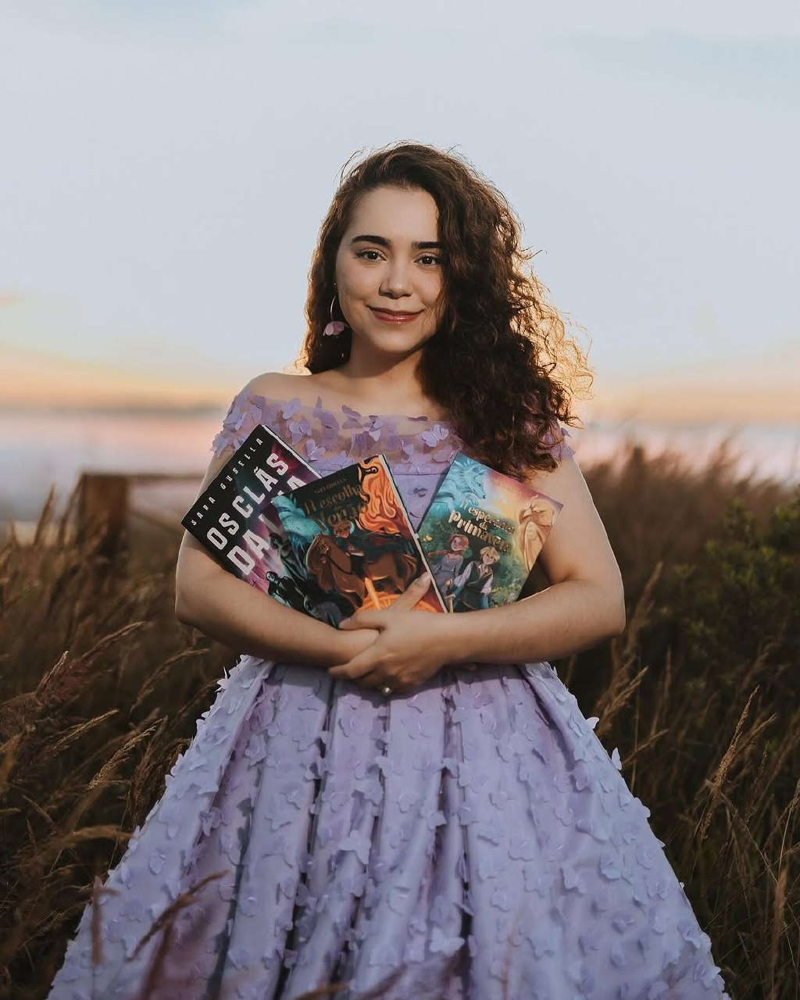
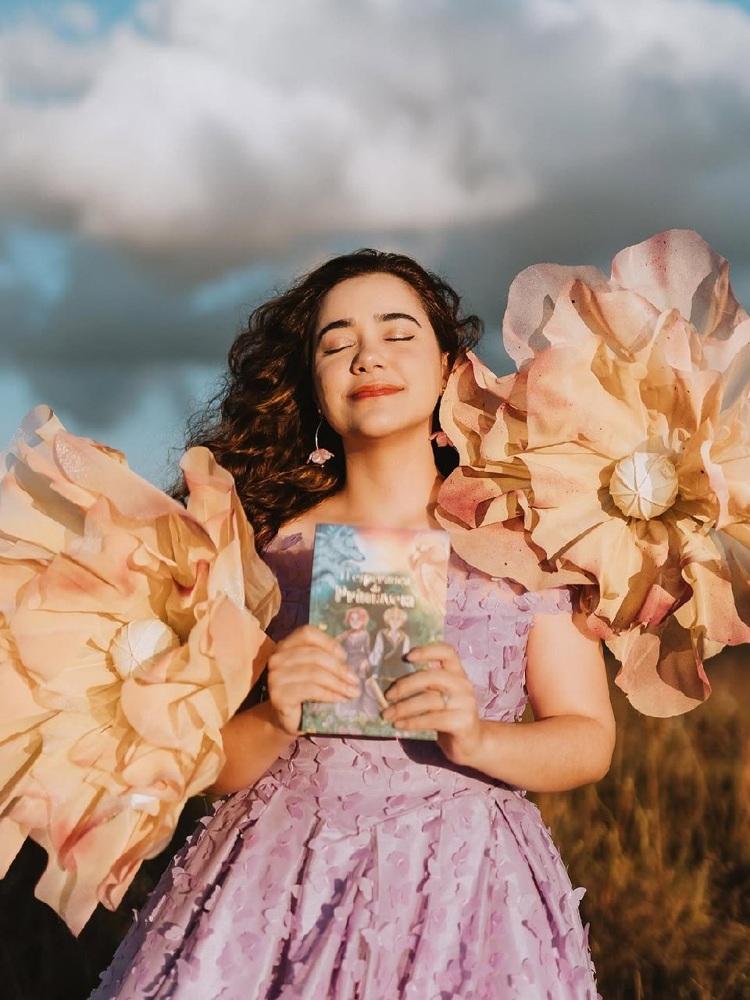
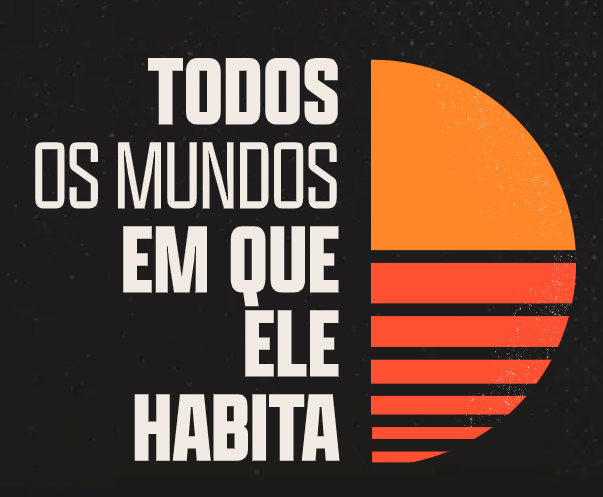

Histórias entre fé, imaginação e eternidade.


Sara Gusella escreve histórias para leitores que ainda acreditam que a ficção pode carregar esperança.

Mineira, sonhadora e apaixonada por mundos imaginários desde a infância, Sara começou a criar histórias ainda aos doze anos, mas foi durante a pandemia que decidiu finalmente transformar universos inteiros em livros.
Entre fantasia épica, distopias espaciais e ficção cristã contemporânea, suas obras investigam redenção, sacrifício, identidade e eternidade através de personagens imperfeitos tentando encontrar significado em meio ao caos.
Saga A Origem das Estações

A Escolha do Verão
Explorar Universo
A Esperança da Primavera
Explorar Universo
O Órfão da Cidade Escura
Explorar UniversoFicção Científica & Distopias

Os Clãs da Lua
Explorar Universo
O Fim De Todas as Marcas
Explorar Universo
Godspeed, June
Explorar UniversoNarrativas Independentes


FEFICC
Idealizada por Sara Gusella, a FEFICC nasceu do desejo de criar um espaço onde leitores cristãos encontrassem histórias alinhadas à fé sem abrir mão da criatividade, profundidade e imaginação. Hoje, a feira reúne milhares de leitores, autores e editoras em um dos maiores movimentos de ficção cristã contemporânea do Brasil.

Histórias podem reacender a
Esperança.
A ficção sempre foi capaz de alcançar lugares onde discursos comuns não chegam. Por isso, Sara acredita em histórias que despertam imaginação, restauram significado e apontam novamente para a eternidade.
Formação Criativa
Histórias continuam existindo mesmo depois da última página.
Acompanhe os bastidores de escrita, reflexões sobre ficção cristã, construção de mundos, anúncios da FEFICC e o processo criativo por trás de cada universo.